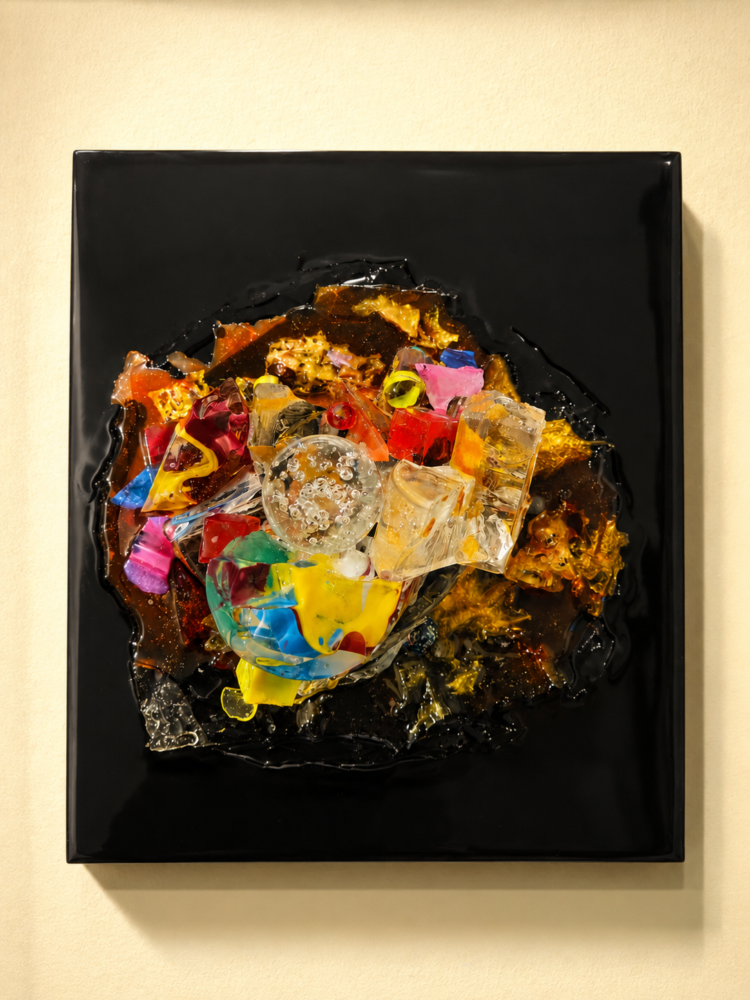
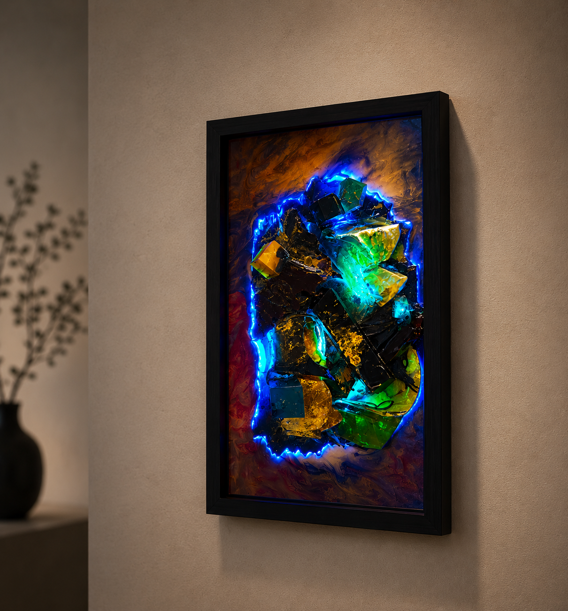

AURUMEN – Studio
AURUMEN ist ein künstlerisches Studio von Julius Wachter und Anna Szekely, das sich der Entwicklung und Realisierung von dreidimensionalen Wandobjekten auf höchstem Niveau widmet. Die Arbeiten entstehen aus der feinen Verbindung von Material, Struktur und visuellen Effekten. Sie sind nicht als Objekte im klassischen Sinn gedacht, sondern als lebendige, räumliche Systeme, in denen sich Wahrnehmung, Tiefe und Bewegung für den Betrachter kontinuierlich verändern.
Die Werke von AURUMEN basieren auf eigens entwickelten Konstruktionen, bei denen Material, Form und Oberfläche eine untrennbare Einheit bilden. Je nach konzeptioneller Ausrichtung reicht die Präsentation von rahmenloser, puristischer Eleganz bis hin zu individuell gefertigten Gehäusen. Wo Rahmen zum Einsatz kommen, entstehen diese in enger Zusammenarbeit mit einem spezialisierten Partner, werden präzise auf das jeweilige Objekt abgestimmt und tragen maßgeblich zur Gesamtwirkung im Raum bei.
Hinter dieser künstlerischen Vision steht eine langjährige, intensive Forschungs- und Entwicklungsarbeit. Seit mehreren Jahren arbeiten Julius Wachter und Anna Szekely intensiv mit Resin als künstlerischem Medium. In einem eigenständigen Prozess wurden zahlreiche Verfahren erprobt, verfeinert und neu gedacht. Daraus sind spezifische Techniken und technologische Lösungen entstanden, die das Fundament der heutigen Arbeiten bilden.







.png)
.png)